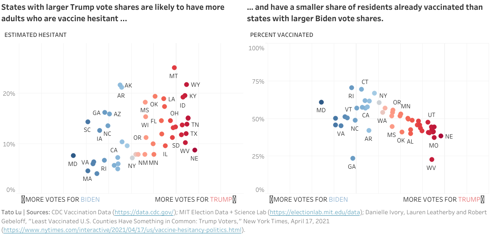

Call me a geek, but I love a good data visualization! What I love even more is a visualization with a story. One data story that I found particularly compelling was the NY Times article “Least Vaccinated U.S. Counties Have Something in Common: Trump Voters” from Danielle Ivory, Lauren Leatherby, and Robert Gebeloff. The article shows that there’s a dividing line between political parties with hesitancy around the Covid-19 vaccine, and the story is supported by a series of charts.
There’s a lot to learn from these charts; not only are they designed beautifully, but each one advances and supports the narrative of the article. Here are three lessons I took away from studying these charts:
1. Every plot should make a point. The best visualizations are the ones that that can be summed up in one sentence, which can work as the title of the chart. If there’s no takeaway behind the chart, readers are left wondering why it’s there. On the flip side, if there’s too many takeaways, a chart can get cluttered and confusing, and it’d probably makes sense to make a separate chart.
2. Don’t be afraid to go back to basics. There’s sometimes the temptation to shoehorn cool plots onto the data, like spiral plots or Marimekko charts. But often, the point is much more clearly demonstrated in a “basic” plot like a scatter-plot, bar chart, or line graph. In fact, basic charts can help establish the “setting” of a data story by laying out the boundaries of the data: a histogram shows the date range of your dataset and can quickly reveal gaps in the data; a scatter plot can establish key correlations; and a line graph can highlight important trends.
3. Sometimes less is more. Cliche, but true! After cooking up a brilliant analysis, the last thing you want is a confusing data element – be it a cluttered axis or a confusing label — that obscures your takeaway. Taking the few extra steps to make sure your plot conveys just the right amount of information ensures that your message is delivered loud and clear. Of course, what’s considered “just right” will depend on the intended audience (a finance professor testifying in court might want to be armed with more details than a layperson reading a NY Times article).

Interactive Charts
To practice what I learned, I downloaded vaccine hesitancy data from the CDC and voter data from MIT and recreated the charts from the article. Click into each image to see the interactive charts on Tableau Public.
States with larger Trump vote shares are likely to have more adults who are vaccine hesitant and have a smaller share of residents already vaccinated than states with larger Biden vote shares.

Counties where more residents voted for Trump often have lower vaccination rates.

Federal government estimates of Covid-19 vaccine hesitancy

Next Steps
To expand on this project, it could be interesting to explore the following ideas:
Plot hospitalizations and deaths from Covid-19. Do counties and states with larger Biden vote shares have fewer hospitalizations and deaths as a result of higher vaccination rates and lower hesitancy?
Use animations to see how vaccine hesitancy has changed over time. Are we seeing that vaccine hesitancy is dropping over time? Or do we see that the rate of vaccine hesitancy has remained largely the same in counties with a higher share of Trump voters?